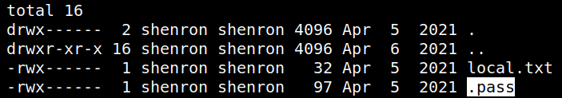
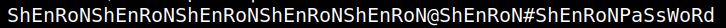

5.1 Decrypting the pass
1. In the same directory in which we found our first flag, we also have a hidden file named
.pass
.

2. Decode the file “.pass”.
bash-5.0
$cat
.pass
|
base32 -d
Output:

Index